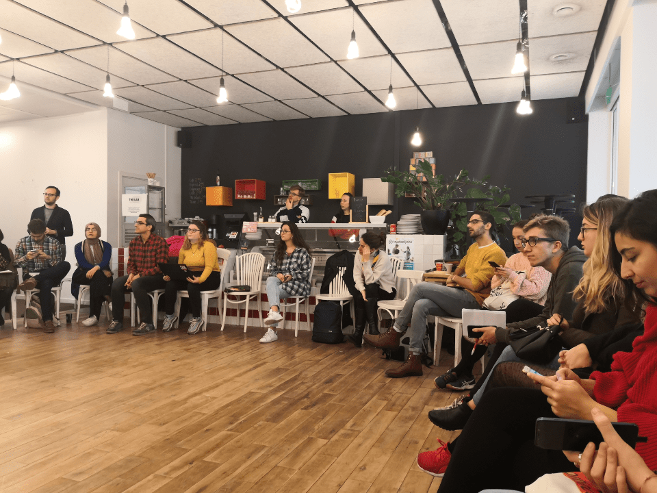

Bonjour à tous et à toutes,
Il y a longtemps que le dernier bulletin a été publié. Nous avons été silencieux mais occupés - en représentant Volt dans l'European Youth Forum, en participant à des réunions d'initiatives citoyennes et en sondant nos options à Lille pour les élections municipales. Qu'est-ce qui s'est passé en détail ?
Alors aux municipales !
Continuer la lecture,
Sven
Nous avons soumis une candidature à Yo!Fest 2020 organisé par l'European Youth Forum il y a quelques mois et nous avons été choisi comme partenaire parmi une quarantaine d'autres organisations. Yo!Fest aura lieu les 29 et 30 mai 2020 à Strasbourg. C'est le plus grand festival en Europe pour les jeunes intéressés à devenir actifs dans leurs communautés et dans la politique. Nous ferons partie du "Lab" où nous aurons l'occasion de partager nos expériences comment construire un mouvement politique - ce qui a fonctionné; ce qui a échoué de manière spectaculaire; où nous avons eu un impact. Il reste encore six mois, mais d'après ce qu'il semble, le Yo!Fest sera le prochain grand événement sur l'agenda de Volt France après les élections municipales.
Nous avons créé un calendrier de Noël pour souligner certaines de nos propositions pour les élections municipales. Il fonctionne pendant 31 jours - toutefois, nous avons plus de propositions - donc jetez un coup d'œil sur le calendrier à https://joyeuxlille.fr ou à nos publications sur notre site web.
Après de nombreuses discussions internes sur la façon de participer aux élections municipales ainsi qu'après avoir participé au festival de la belle démocratie à Saint-André-lez-Lille et nos rencontres avec des listes de citoyens dans la région de la MEL, nous avons réalisé qu'il nous fallait beaucoup plus de temps. Afin de construire une équipe plus grande. Afin de créer une dynamique. Et afin de participer aux élections avec une liste de citoyens que nous sommes curieux d'organiser.
Nous avons développé une grande partie de notre programme en recueillant et en évoluant les idées des citoyens. Le sujet (ou projet), qui nous voulons montre avec le Brexit qui se rapproche et la nouvelle proximité de la frontière européenne - c'est à montre ce que cela signifie d'être une ville phare européenne (voici, notre démarche).
Et voilà où nous en sommes : Nous étions très heureux qu'au cours de nos réflexions, EELV nous ait proposé de nous joindre à leur campagne et de porter nos idées européennes aux élections. Nous avons besoin de cette expérience de la participation aux élections. Notre élu au parlement européen fait partie du groupe des Verts - et on va essayer de trouver la même dynamique au niveau local. Nous avons probablement plus en commun que nous le pensons. Néanmoins, nous espérons que ce qui nous rend différents nous permettra de faire une partie de la différence qui permet de capturer la Mairie.
Pour l'instant, nous aurons trois candidats sur la liste de l'EELV. Et n'oublions pas non plus Beate, qui se présente pour Volt sur la liste des citoyens de Bondues (Ouvrons nos horizons - Bondues 2020).
Restez à l'écoute pour les premiers événements de la campagne et suivez-nous au cours des prochains mois
Nous serons dans les marchés le week-end prochain pour tracter avec les autres équipes. Si vous êtes à Lille, rejoignez-nous le samedi sur la marché à Séwastopol (10:00) et le dimanche sur le marché de Caulier (10:00) et Vieux-Lille (10:00). Nous continuerons avec nos événements en janvier.
National
Outre la réforme des retraites, pour laquelle nous travaillons sur une position, il y a aussi la convention citoyennes pour le climat qui est actuellement dans sa deuxième phase d'élaboration. Nous avons déjà fait une contribution (soumise par l'équipe de Lille) - et vous aussi, vous pouvez !
Quels événements à Lille sont intéressants à participer ? Voici notre liste :
Des questions, des commentaires : info@voltlille.fr.
Bonne semaine à tous,
Sven